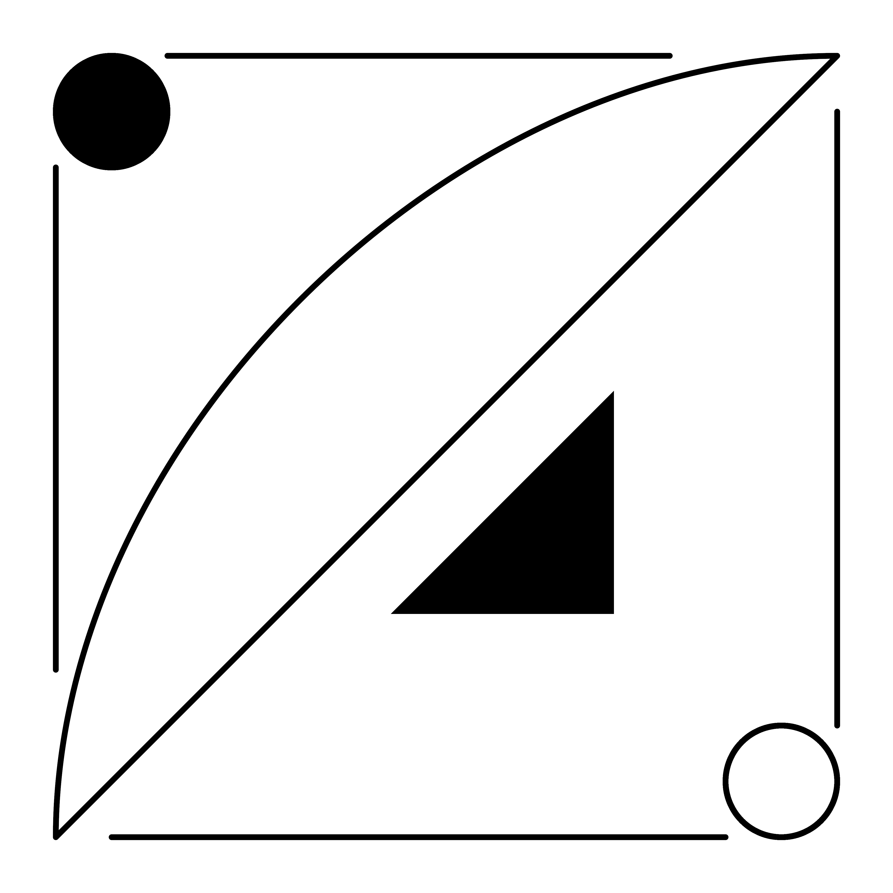
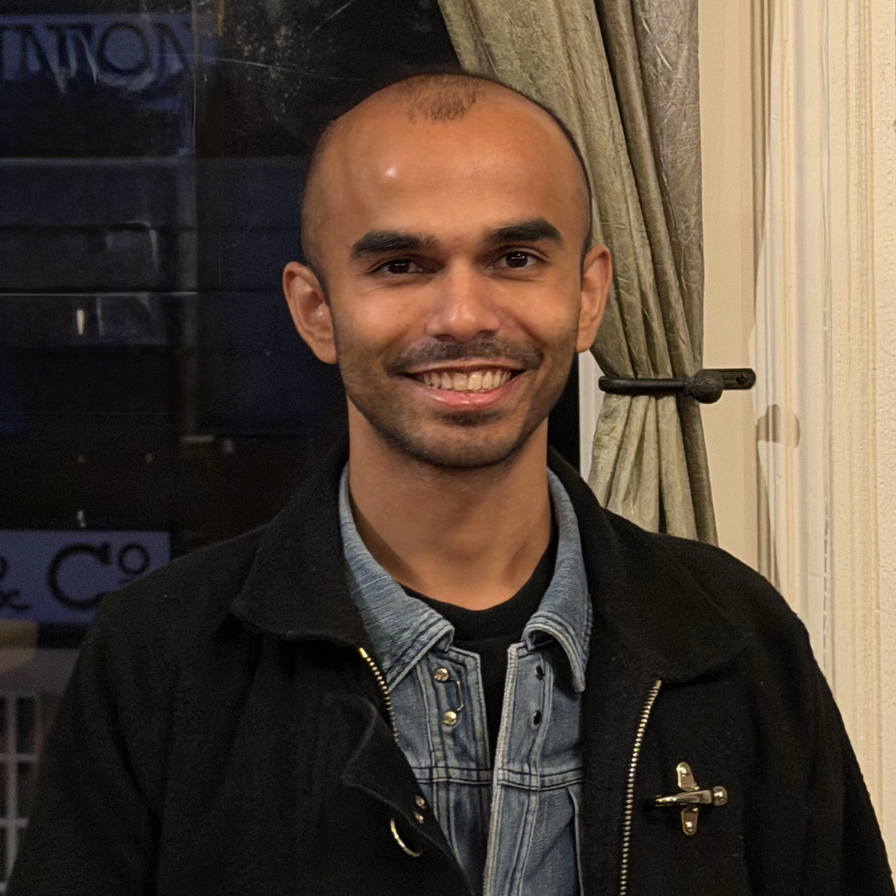

a.c')">
portrait')">Applied Mathematician
I look forward to learning about you, your interests, and working with you. Math is an extension of our senses and we use it to move the world. Having a strong understanding of the fundamental concepts so we can maintain calm when tackling challenging, new applications is what leads to long lasting joy in learning and innovation.
I first had the opportunity to work with Aamir at NASA and was glad to continue collaborating with him after he launched his consulting business.
As a biological scientist, I work with large and often complex datasets. Aamir has an exceptional talent for turning them into clear, intuitive visualizations that make the underlying story easy to see. Beyond his statistical expertise, he brings new approaches I may not have considered, helping me get more value from my data and communicate results more effectively.
Working with Aamir has made several of my projects stronger. I have greatly appreciated his insight.
I look forward to speaking with you.
This form goes straight to me. Share any details and links related to your work.
You can also reach me on LinkedIn if you prefer.